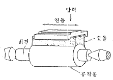
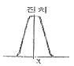
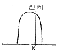
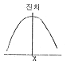
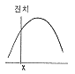

사출(프레스)금형산업기사 (2009-07-26 기출문제)
1과목: 금형설계
1. 프로그레시브 가공과 같이 연속 가공을 하는 공정중에 다이의 수명과 다이의 수정을 필요로 할 때 가공하지 않고 쉬는 공정을 설치하여야 한다. 이를 무엇이라고 하는가?
- 파일럿
- 스페이서 블록
- 핑거스톱
- 아이들
(정답률: 89%)

2. 다이 세트 구성 부품이 아닌 것은?
- 상 홀더 (PUNCH HOLDER)
- 가이드 포스트와 가이드 부시
- 하 홀더( DIE HOLDER)
- 펀치와 다이
(정답률: 72%)
3. 프레스 가공에서 피어싱 가공 및 블랭킹 가공을 통합시켜 1행정으로 구멍이 있는 블랭크(blank)를 가공하는 금형은?
- 싱글타입 금형
- 콤파운드 금형
- 프로그레시브 금형
- 파인블랭킹 금형
(정답률: 65%)
4. 피어싱 금형에 사용되는 표준 부품이 아닌 것은?
- 피어싱 펀치
- 스트리퍼 볼트
- 게이트
- 다이 부시
(정답률: 79%)
5. 두께 1mm, 내경 30mm, 높이 20mm 원통 컵을 1회 드로잉으로 완성시키고자 할 때 최대 드로잉 하중은 약 몇 kgf 인가?(단, 재료의 인장강도는 40 kgf/mm2이다.)
- 2501
- 3831
- 5201
- 7801
(정답률: 53%)
6. 블랭킹 금형에서 블랭킹력이 1000 kgf 이고, 전단 윤곽길이가 50mm 일 때, 다이 플레이트의 두께는 최소 어느 정도가 외어야 하는가?
- 7.5mm
- 10mm
- 15mm
- 20mm
(정답률: 40%)
7. 다음 중 인력 프레스에 해당되는 것은?
- 크랭크 프레스
- 나사 프레스
- 마찰프레스
- 유압프레스
(정답률: 56%)
8. 다음 중 다이(Die)의 분할 방법으로 틀린 것은?
- 국부적인 요철이 있어야 한다.
- 원형과 직전 형상으로 한다.
- 연삭 가공이 용이해야 한다.
- 치수 측정이 쉬워야 한다.
(정답률: 48%)
9. 메달이나 화폐 등의 제작에 사용되는 가공을 무엇이라 하는가?
- 사이징
- 코이닝
- 스웨이징
- 업셋팅
(정답률: 93%)
10. 어레인지(arrange) 도변을 작성할 때 피어싱 공차의 치수가 ø20(+0.1, 0) 일 경우 목적치수를 감안한 펀치 설계 치수로 가장 적합한 것은? (단. 마모여유는 제품의 공차의 80%를 고려한다.)
- ø19.90
- ø20.00
- ø20.08
- ø21.10
(정답률: 80%)
11. 사출금형의 부품인 로케이트링에 대한 역할을 설명한 것으로 가장 적합한 것은?
- 이젝터 핀의 작동이 흔들리지 않도록 안내 기능을 한다.
- 금형의 가동축 부착판에 설치되어, 금형 설치시 사출 설형기의 정위치에 고정 시키는 기능을 한다.
- 리턴 핀의 안내역할을 하여, 성형시 성형품의 정밀도를 보장하는 기능을 한다.
- 사출 성형기의 노즐과 사출금형의 스프루 부시의 위치가 일치될 수 있도록 잡아주는 역할을 한다.
(정답률: 76%)
12. 다음 중 사출 성형기의 주요 사양에 해당되지 않는 것은?
- 가소화 능력[kgf/hr]
- 사출 용량[g]
- 냉각 능력[kcal/hr]
- 사출 압력[kgf/mm2]
(정답률: 71%)
13. 이젝터 핀을 사용할 때 장점을 설명한 것으로 틀린것은?
- 일반적으로 성형품의 임의의 위치에 설치 할수 있다.
- 핀 구멍을 가공하기가 쉽다.
- 중앙에 구멍이 있는 부시모양의 성형품에 적합하다.
- 호환성이 좋으며 파손시 보수가 쉽다.
(정답률: 59%)
14. 사출금형의 필요조건을 설명한 것으로 가장 거리가 먼 것은?
- 수지가 수축하므로 치수 정밀도를 유지할 필요가 없다.
- 고장이 적고 수명이 긴 금형 구조이어야 한다.
- 제작 기간이 짧고, 제작비가 싼 것이 요망된다
- 성형능률 생상전이 높은 구조이어야 한다.
(정답률: 85%)
15. 특수한 구조를 가진 사출성형 금형에는 분할금형 나사금형 슬라이드 코어 금형 등이 있다. 금형의 특징을 설명한 것 중 틀린 것은?
- 측면에 언더컷의 형상 제품을 만들 수 있다.
- 성형 사이클을 빨리 할 수 있다.
- 금형 값이 비싸 진다.
- 고장이 나기 쉽고, 부속장치가 필요하다.
(정답률: 45%)
16. 두께가 일정한 매우 얇은 시트(sheet) 제품 또는 필름을 연속적으로 고속 성형 하는 방법은?
- 압축 성형
- 켈린더 성형
- 적층 성형
- 이송 성형
(정답률: 67%)
17. 보스(boss)설계시 유의사항에 해당하지 않는 것은?
- 높이가 높은 보스는 피하는 것이 좋다.
- 보스는 높게 할 필요가 있을 때 보스 측벽에는 리브를 붙이지 않아야 된다.
- 살 두께가 두꺼우면 싱크마크의 원인이 되므로 고려한다.
- 관통 구멍의 보스는 반드시 그 주변에 웰드 라인이 발생하는 것을 고려해야 한다.
(정답률: 78%)
18. 사출 성형품에 플래시가 발생하였다. 그 원인으로 적합한 것은?
- 받침판의 두께가 너무 두껍다.
- 사출 압력이 너무 낮다.
- 수지의 유동성이 너무 나쁘다.
- 금형 체결력이 부족하다.
(정답률: 57%)
19. 내충격성, 강인성이 우수하고 유동성이 좋지 않으며, 내구성은 약하나 플라스틱에 도금을 필요로 하는 곳에 적합한 수지는?
- PC
- PS
- ABS
- PVC
(정답률: 54%)
20. 사출성형에서 품질 좋은 성형품을 얻기 위해서는 캐비티의 온도를 재료 특성에 맞는 온도로 조절하여 효과적으로 열을 흡수해야한다. 다음 중 온도조절 효과가 아닌 것은?
- 성형품의 표면 상태를 개선할 수 있다.
- 성형품의 강도 저하를 방지할 수 있다.
- 치수 품질이 안정된다.
- 수지를 절약할 수 있다.
(정답률: 20%)
2과목: 기계가공법 및 안전관리
21. 두께 1.5mm인연질 탄소강판에 지름 3.2cm의 구멍을 펀칭할 때 전단력을 구하면 약 몇 kgf인가? (단, 전단응력 T=25kgf/mm2이다.)
- 377
- 3770
- 167
- 1674
(정답률: 55%)
22. 드릴 지그의 3대 요소에 속하지 않는 것은?
- 위치결정
- 체결
- 드릴 머신의 규격
- 공구의 안내
(정답률: 59%)
23. 텅스텐, 초경합금, 다이아몬드 등의 보석류, 그 외 공작기계로 가공이 곤란한 유리, 자기제품 등을 가공하는데 유용한 특수 가공은?
- 선반가공
- CNC 밀링가공
- 초음파가공
- 호닝가공
(정답률: 70%)
24. 롤러의 중심거리 100mm의 사인바로30° 를 만들었다. 낮은 쪽으로 블록게이지의 높이를 10mm로 하면 높은 쪽은 몇 mm로 해야 하는가?
- 30
- 40
- 50
- 60
(정답률: 40%)
25. 다음 그림과 같이 숫돌에 진동을 주면서 공작물에 회전 이송운동을 주어 표면을 다듬질하는 가공 방법은?

- 선반
- 슈퍼피니싱
- 폴리싱
- 버니싱
(정답률: 73%)
26. 사출금형에서 3매 구성 금형의 가장 큰 장점은?
- 금형의 열리는 시간이 단축된다.
- 사이드 게이트를 주로 사용한다.
- 구조가 간단하여 금형 가격이 저렴하다.
- 게이트를 임의의 위치에 배치할 수 있다.
(정답률: 68%)
27. 와이어컷 방전 가공시 가공 속도는?
- 이송속도(mm/min) × 공작물 두께(mm)
- 이송속도(mm/min) × 이송 압력(kg/mm2)
- 가공길이(mm)/시간×min)
- 공작물 두께(mm) × 가공단면적(mm2)
(정답률: 40%)
28. CNC가공에 있어서 NC 제어 방식이 아닌 것은?
- 위치 결정 제어
- 윤곽 절삭 제어
- 직선 절삭 제어
- 구멍 절삭 제어
(정답률: 60%)
29. 연강용 드릴의 표준 선단 각도는?
- 118°
- 128°
- 138°
- 148°
(정답률: 71%)
30. 드릴지그 부시의 종류 중 지그판에 직접 압임 고정 하여 지그 수명이 될 때까지 소량 생산용으로 사용되는 것은?
- 고정 부시
- 라이너 부시
- 기름홈 부시
- 템플레이트 부시
(정답률: 71%)
31. 선반에서 지름 100mm의 저탄소강재를 회전수 1000rpm, 이송 0.3mm/rev 가공길이 150mm 를 1회 가공할 때 소요되는 가공시간은?
- 15초
- 30초
- 45초
- 60초
(정답률: 56%)
32. 사출성형기에서 형조임 장치의 하나인 토글식의 특징이 아닌 것은?
- 홈 작업
- 기어절삭 작업
- 드릴구멍 작업
- 널링 작업
(정답률: 57%)
33. 사출성형기에서 형조임 장치의 하나인 토글식의 특징이 아닌 것은?
- 개폐속도가 빠르다.
- 소요동력이 작다.
- 금형두께에 따라 스트로크가 변한다.
- 윤활유 관리에 주의해야 한다.
(정답률: 34%)
34. 전해 작용과 기계적인 연삭 가공을 복합시킨 가공 방법으로 방향성이 없는 매끈하고 내식성이 높은 면을 얻을 수 있는 가공법은?
- 선삭
- 전해 연삭
- 전주 가공
- 머시닝센터
(정답률: 73%)
35. CNC 선반 가공에서 드웰(G04)은 지령된 점에서 일정시간 멈추기 위하여 사용한다. 이 때 사용할 수 없는 어드레스는?
- X
- U
- P
- S
(정답률: 68%)
36. CNC 공작기계에서 서보모터의 회전운동을 테이블의 직선운동으로 바꾸는 장치는?
- NC 유닛
- 리졸버
- 컨트롤러
- 볼 스크류
(정답률: 38%)
37. 냉간가공에 의하여 항복점이 높아지고, 경도 및 강도가 증가하는 것을 무엇이라 하는가?
- 시효경화
- 표면경화
- 가공경화
- 탄성경화
(정답률: 58%)
38. 숏 피닝 가공을 하면 어떤 장점이 있는가?
- 가공시간이 단축된다.
- 가공면에 광택이 생긴다.
- 표면경도와 피로강도가 증가한다.
- 정밀한 치수를 얻을 수 있다.
(정답률: 67%)
39. 금형 부품을 고정하는 방법이 아닌 것은?
- 압입 및 판 누르기에 의한 고정
- 멈춤 나사 의한 방법
- 키 및 핀에 의한 고정
- 클러치에 의한 고정
(정답률: 58%)
40. 프레스 작업 종료 후 안전조치 사항에 대한 설명으로 틀린 것은?
- 플라이휠의 정지를 위해 손으로 잡지 말아야 한다.
- 정지중인 프레스 페달은 절대로 밟지 말아야 한다.
- 정전시 즉시 스위치를 꺼야 한다.
- 프레스 밑 전단기의 클러치가 연결된 상태로 정지 시켜두어야 한다.
(정답률: 69%)
3과목: 금형재료 및 정밀계측
41. 이론적으로 150 mm의 사인바로 20° 각을 만들려면 양단의 게이지 불록의 높이 차는 약 몇 mm 이어야 하는가?
- 34.202
- 51.303
- 46.984
- 93.969
(정답률: 60%)
42. 광선 정반에 관한 설명 중 틀린 것은?
- 한 면이 고정도의 평면으로 래핑 가공한 유리 또는 수정으로 된 원판으로 되어 있다.
- 빛의 간섭 현상을 이용한 측정기이다.
- 흔들림 정도 측정에만 사용된다.
- 사용전에는 알콜이나 전용 세척용액을 사용하여 깨끗이 닦아서 사용하며, 청결한 곳에서 사용하는 것이 좋다.
(정답률: 73%)
43. 다음 중 정확도는 좋지만, 정밀도가 좋지 않는 것은? (단, X 로 표시된 자표 위치가 참 값이다.)




(정답률: 57%)
44. 중립 축 길이 변화가 가장 적게 유지되도록 지지하는 베셀점(bessel point)은? (단, 지지 대상물의 전길이는 l이며 a는 지지 대상물의 양끝에서부터 각 지점까지의 거리를 의미한다.)
- a=0.2386l
- a=0.2232l
- a=0.2113l
- a=0.2203l
(정답률: 43%)
45. 공작물의 실제치수를 직접 알 수 없는 측정기는?
- 버니어켈리퍼스
- 마이크로미터
- 하이트 게이지
- 지침 측미기
(정답률: 51%)
46. 최소눈금이 0.5mm인 하이트 게이지에서 어미자를 12mm를 아들자에서 25등분하였다. 읽을 수 있는 최소값은 몇 mm인가?
- 0.01
- 0.02
- 0.04
- 0.⑤
(정답률: 61%)
47. 일반적인 나사의 유효지름 측정법이 아닌 것은?
- 삼침법에 의한 측정
- 공구현미경에 의한 측정
- 포인트 마이크로미터에 의한 측정
- 나사 마이크로미터에 의한 측정
(정답률: 62%)
48. 컴퍼에이터의 종류 중 광학적 컴퍼레이터에 해당하지 않는 것은?
- 미크로룩스
- 미니 미터
- 옵티미터
- 간섭측미기
(정답률: 31%)
49. 공기 마이크로미터의 특징으로 잘못 설명된 것은?
- 비용면에서 다품종 소량생산의 고정도 측정에 적합하다.
- 측정령에 의한 오차를 우려할 필요가 없다.
- 특히 내경 특정용에 능률적이며 적합하다.
- 기계적 확대기구가 없어 고정도를 유지하기 용이하다.
(정답률: 36%)
50. 한계게이지의 단점으로 옳은 것은?
- 부품 사이의 호환성이 없다.
- 분업 방식을 취할 수 없다.
- 조작이 복잡하고 시간이 오래 걸린다.
- 1개의 치수마다 1개의 게이지가 필요하다.
(정답률: 63%)
51. 연강재 시험편의 인장강도 시험에서 표점거리 140mm, 시편이 1500kg에서 절단되었고, 시편거리는 155mm가 되었다. 이 때 연신율은 약 몇 % 인가?
- 8.7
- 10.7
- 12.5
- 15.4
(정답률: 58%)
52. 열팽창계수가 작고, 내식성이 우수하여 전구의 도입선, 재료로 사용되는 니켈-철 합금은?
- 콘스탄탄
- 플라티나이트
- 모넬메탈
- 백동
(정답률: 33%)
53. 열가소성 수지 중 범용 수지의 용도로 적합하지 않는 것은?
- 청소기의 케이스
- 전화기 본체
- 에이컨 그릴
- 기어
(정답률: 78%)
54. 다금질한 철강을 A1변태점 이하의 일정온도로 가열 하여 인성을 증가시킬 목적으로 조작하는열처리는?
- 담금질
- 뜨임
- 풀림
- 노멀라이징
(정답률: 65%)
55. 18-8 스테인리스강에 대한 설명으로 틀린 것은?
- 화학적으로 조성은 Cr16-26% Ni 6-20% 나머지 Fe 되어 있다.
- 내식성이 우수하며 비자성체이다.
- 오스테나이트계 스테인리스강이다.
- 염산, 염소가스, 황산에 매우 강하다.
(정답률: 48%)
56. 다음 중 고속도 공구강의 기본 성분에 속하지 않는 원소는?
- Ni
- Cr
- W
- V
(정답률: 42%)
57. 탄소강에서 탄소의 함유량이 증가함에 따라 증가하는 물리적 성질은?
- 비열
- 비중
- 열전도도
- 열팽창계수
(정답률: 41%)
58. 철-탄소 평행상태도에서 공정점(탄소량 4.3%)의 조직은?
- 페라이트
- 펄라이트
- 시멘타이트
- 레데뷰라이트
(정답률: 40%)
59. 순철(Fe)의 자기변태점 온도는 약 몇°C 인가?
- 723
- 768
- 910
- 1400
(정답률: 60%)
60. 블랭킹 및 피어싱 펀치로 사용되는 금형재료로적합하지 않는 것은?
- STD11
- STS3
- STC3
- SM15C
(정답률: 51%)